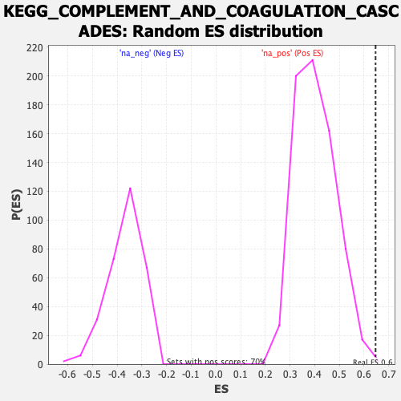

| | | Dataset | cond1.vs.cond2 |
| Phenotype | NoPhenotypeAvailable |
| Upregulated in class | na_pos |
| GeneSet | KEGG_COMPLEMENT_AND_COAGULATION_CASCADES |
| Enrichment Score (ES) | 0.64656985 |
| Normalized Enrichment Score (NES) | 1.604351 |
| Nominal p-value | 0.0014306152 |
| FDR q-value | 0.054663703 |
| FWER p-Value | 0.234 |
Table: GSEA Results Summary
 Fig 1: Enrichment plot: KEGG_COMPLEMENT_AND_COAGULATION_CASCADES
Fig 1: Enrichment plot: KEGG_COMPLEMENT_AND_COAGULATION_CASCADES
Profile of the Running ES Score & Positions of GeneSet Members on the Rank Ordered List
| SYMBOL | RANK IN GENE LIST | RANK METRIC SCORE | RUNNING ES | CORE ENRICHMENT | | 1 | F5 | 8 | 4.071 | 0.1102 | Yes |
| 2 | CFD | 86 | 2.321 | 0.1717 | Yes |
| 3 | TFPI | 172 | 1.907 | 0.2218 | Yes |
| 4 | SERPIND1 | 199 | 1.834 | 0.2711 | Yes |
| 5 | SERPINF2 | 212 | 1.802 | 0.3197 | Yes |
| 6 | C4BPA | 293 | 1.589 | 0.3613 | Yes |
| 7 | CFI | 525 | 1.327 | 0.3930 | Yes |
| 8 | SERPINE1 | 750 | 1.134 | 0.4196 | Yes |
| 9 | SERPINA1 | 788 | 1.104 | 0.4488 | Yes |
| 10 | KLKB1 | 1467 | 0.830 | 0.4587 | Yes |
| 11 | C4BPB | 1478 | 0.828 | 0.4809 | Yes |
| 12 | F13A1 | 1542 | 0.814 | 0.5018 | Yes |
| 13 | CD59 | 2081 | 0.708 | 0.5110 | Yes |
| 14 | CD55 | 2146 | 0.698 | 0.5287 | Yes |
| 15 | CFB | 2245 | 0.683 | 0.5454 | Yes |
| 16 | SERPING1 | 2435 | 0.652 | 0.5595 | Yes |
| 17 | MASP2 | 2555 | 0.638 | 0.5746 | Yes |
| 18 | PROC | 2799 | 0.608 | 0.5865 | Yes |
| 19 | C4A | 2814 | 0.606 | 0.6027 | Yes |
| 20 | C3 | 2848 | 0.601 | 0.6184 | Yes |
| 21 | CFH | 3134 | 0.571 | 0.6285 | Yes |
| 22 | VWF | 3575 | 0.522 | 0.6345 | Yes |
| 23 | F3 | 4235 | 0.461 | 0.6346 | Yes |
| 24 | BDKRB1 | 4263 | 0.458 | 0.6466 | Yes |
| 25 | PLAU | 5538 | 0.373 | 0.6329 | No |
| 26 | C9 | 5785 | 0.361 | 0.6381 | No |
| 27 | F8 | 6426 | 0.330 | 0.6351 | No |
| 28 | C1R | 7128 | 0.295 | 0.6300 | No |
| 29 | C5AR1 | 7566 | 0.277 | 0.6294 | No |
| 30 | F13B | 8137 | 0.261 | 0.6258 | No |
| 31 | PLG | 8936 | 0.229 | 0.6171 | No |
| 32 | C1S | 9069 | 0.223 | 0.6207 | No |
| 33 | C1QB | 9946 | 0.197 | 0.6097 | No |
| 34 | THBD | 10846 | 0.166 | 0.5974 | No |
| 35 | FGG | 11089 | 0.157 | 0.5972 | No |
| 36 | F11 | 12545 | 0.144 | 0.5739 | No |
| 37 | MBL2 | 13182 | 0.142 | 0.5659 | No |
| 38 | BDKRB2 | 13336 | 0.138 | 0.5668 | No |
| 39 | A2M | 14364 | 0.105 | 0.5505 | No |
| 40 | C1QA | 14508 | 0.101 | 0.5506 | No |
| 41 | CD46 | 14856 | 0.090 | 0.5465 | No |
| 42 | C1QC | 15204 | 0.080 | 0.5422 | No |
| 43 | C3AR1 | 15332 | 0.077 | 0.5420 | No |
| 44 | C2 | 15389 | 0.075 | 0.5430 | No |
| 45 | PROS1 | 16359 | 0.050 | 0.5262 | No |
| 46 | SERPINC1 | 18429 | 0.013 | 0.4880 | No |
| 47 | PLAT | 18749 | 0.004 | 0.4821 | No |
| 48 | C8B | 18932 | 0.000 | 0.4787 | No |
| 49 | CPB2 | 18986 | 0.000 | 0.4777 | No |
| 50 | F9 | 19044 | 0.000 | 0.4767 | No |
| 51 | C7 | 19122 | 0.000 | 0.4752 | No |
| 52 | MASP1 | 19243 | 0.000 | 0.4730 | No |
| 53 | SERPINA5 | 20442 | 0.000 | 0.4506 | No |
| 54 | CR1 | 21525 | 0.000 | 0.4304 | No |
| 55 | C4B | 23849 | 0.000 | 0.3871 | No |
| 56 | C8A | 39283 | -0.026 | 0.0998 | No |
| 57 | C6 | 41803 | -0.055 | 0.0543 | No |
| 58 | F7 | 43894 | -0.114 | 0.0183 | No |
| 59 | FGB | 44192 | -0.121 | 0.0161 | No |
| 60 | F2R | 44559 | -0.133 | 0.0129 | No |
| 61 | F2 | 45845 | -0.175 | -0.0063 | No |
| 62 | PLAUR | 46114 | -0.186 | -0.0063 | No |
| 63 | F12 | 46560 | -0.205 | -0.0090 | No |
| 64 | F10 | 47828 | -0.261 | -0.0256 | No |
| 65 | C5 | 50646 | -0.467 | -0.0655 | No |
| 66 | KNG1 | 50683 | -0.470 | -0.0534 | No |
| 67 | FGA | 53066 | -1.038 | -0.0697 | No |
| 68 | C8G | 53433 | -1.434 | -0.0377 | No |
| 69 | CR2 | 53493 | -1.542 | 0.0030 | No |
Table: GSEA details [plain text format]

Fig 2: KEGG_COMPLEMENT_AND_COAGULATION_CASCADES: Random ES distribution
Gene set null distribution of ES for KEGG_COMPLEMENT_AND_COAGULATION_CASCADES